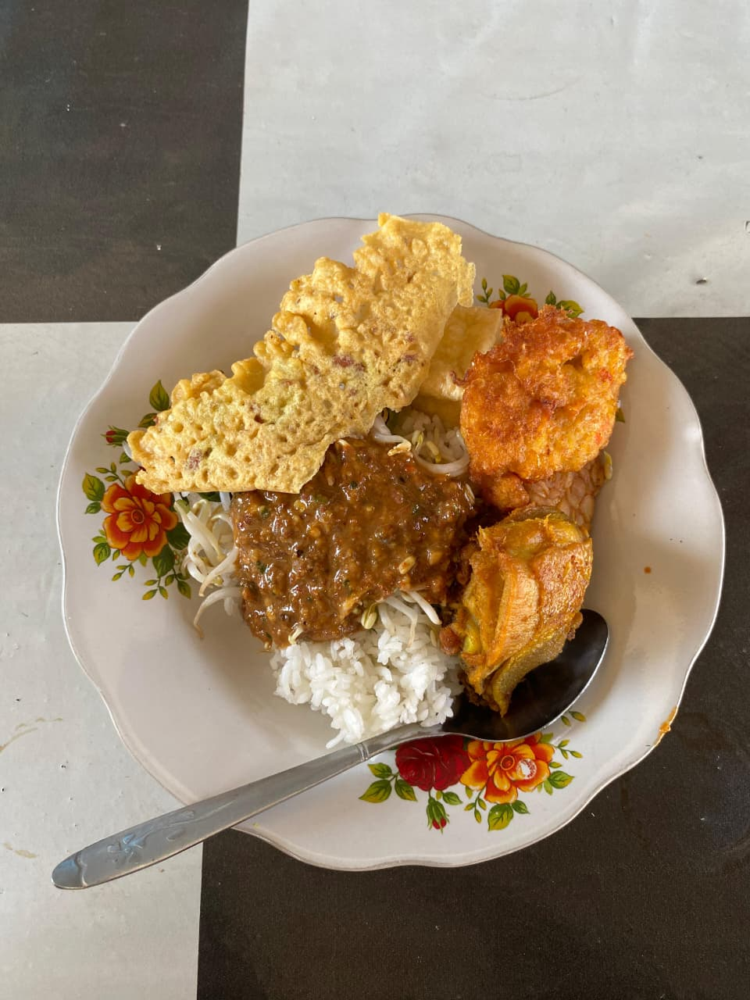

Detail Produk

Warung Dapur Manis
Mulai dari Rp10.000
Warung Dapur Manis adalah destinasi wajib bagi para pencari kuliner. Menjual Nasi Pecel dan berbagai makanan khas Situbondo dan Banyuwangi.
- Produk Unggulan: Nasi Pecel Ayam, Nasi Lodeh
- Lokasi: Depan tugu kebangsaan Wonorejo.
Beli Oleh-Oleh di Warung Dapur Manis Sekarang!
Pilih cara pemesanan yang paling mudah untuk Anda.